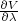

We will compute the free energy associated with an electron transfer between a Cu(I) and Cu(II) ion. How large is this free energy?
Since we know the reference free energy, we can verify the validity and accuracy of our simulations. We proceed in steps, using different, but related methods:
First, use your favorite molecule editor to create two Copper ions and save the file as a pdb file. Next, manipulate this file such that the atoms are in different goups (with different group index, if you’re unsure, look for an explanation of the pdb format on-line). Also, name the groups CU1+ and CU1+, and both atoms CU. The reason for using the same group names is that in the Gromos force field, which we will use here, the Lennard-Jones parameters are different for both ions, which could complicate things later. We will not care about the precise nature of the atomtype, but for more precise work, one should consider chaning also the atomtypes.
Center the two ions in a cubic box of volume 4x4x4 nm3. Assuming you have named your pdb 2Cu.pdb, you can do this with editconf:
Next, we use pdb2gmx to automatically generate a topology file for this system. Before we do that, we check whether the atom names are what we want them to be. Open the coordinate file you have just created with your favorite text editor. It must look like:
If it indeed does (otherwise fix it), then use pdb2gmx as follows:
You will get asked which force field to use. Choose GROMOS96 43a2. Have a look at the files that are created, in particular the topol.top file, which contains the topology of this system. Try to understand that the topology includes the charges on the two copper ions. We will call this situation, in which there is a 1+ charge on the first copper ion and a 2+ charge on the second copper, state A. THe purpose of the exercise is to compute the free energy difference between state A and state B, in which the charge of the first copper ion is 2+ and that of the second 1+. Shortly, we will manualy create the topolgy of the B state by changing these charges.
Because we’re interested in the free energy of electron transfer in water, we now add water automatically with the genbox command of gromacs:
The last option ensures that the topology gets automatically updated as well. Have a look at the modified topology file. You can also view the solvated system with your favorite pdb viewer. You can see the water looks a bit ordered. We will perform an energy minimization to get rid of strain first. Use the following mdp file. Use the on-line gromacs manual on the mdp keyword to learn and understand what each option is doing. There are many options, which we will (and can) ignore for now.
Save these settings in a file with extension .mdp. To generate the input for the mdrun program, we use the gromacs-pre-processor:
This creates a topol.tpr. If there are errors or warnings, check them. If a topol.tpr is created, you can perform the energy minimization (a steepest descent) with the mdrun program:
After minimization inspect the structure. It is not essential to reach the required convergence threshold here as we’re only interested to get rid of strain due to incorrect placement of water molecules. You can use pdb2gmx to convert the confout.gro into a pdb file that you can open with your favorite molecule viewer. If all looks all-right, proceed with neutralizing the system with 3 Cl- counter-ions. Remember from the lecture on Ewald and PME that charge neutrality is important. We use the genion program to do this automatically. This program needs a tpr file, so we first need to generate that file with grompp again. We use the confout.gro (i.e. the end structure of the minimization) as the input structure file:
then use genion:
It probably is a good idea to also energy minimize the neutral.gro structure.
Next, we perform an 100 ps equilibration simulation. No idea if this is enough to reach thermal equilibrium, but we’ll ignore this for now. By what criteria would you consider the system equilibrated? We will run now at a constant temperature, using so-called weak-coupling. The .mdp file contains the following options. Again, make sure you understand what these options are doing. And why we use them. If not, ask!
With this input file, you can create a tpr file as before, and use it with mdrun.
After equilibration, we will perform a simulation of 1 ns, and use this trajectory for FEP. Change the number of steps in the mdp file to request a 1 ns simulation and carry out the simulations. Save the configurations every ps. This simulation will take 10 times longer than the equilibrium simulation.
After the simulation is done, we will use the -rerun option of MD run to calculate V B - V A for every frame in the trajectory. The topology file that we use for the rerun should thus reflect the situation in state B (i.e. the first copper ion should have a +2 charge and the second a +1 charge). Save the state A topology that we have been using until now under a different name, such as topol_B.itp and make the required modificaiton to the [ atoms ] section in that topology file.
Use the new topology of state B to create a new run input file (tpr). Better use a different name than before, or even better, create a new directory and perform the new calculation there. You also need to set the output options to 1, i.e. each step, because the trajectory contains only snapshots every 500 steps (i.e. each ps).
After creating the new tpr file, copy also the old trajectory file belonging to state A to the current location and perform the rerun:
You can get access to the energies stored in the edr file with g_energy and select the potential energy (why?). Extract also the potential energy from the previous simulation (state A). From these energies, calculate the free energy from the Zwanzig equation, as was explained in the lecture:
|
| (1) |
What is the free energy differnce? What is the error. Why is it so large?
The error is due to poor overlap. We have not sampled enough configurations in which the water molecules are oriented so as to favour the product state.
To reduce the error, we will perform the FEP is smaller steps. Consider the situation in which compute the free energy for smaller steps Cu++Cu2+ →Cu1.1++Cu1.9+, Cu1.1++Cu1.9+ →Cu1.2++Cu1.8+, and so on. Of course this is not possible in reality, where there exist no non-integer electron charges, but because free energy is a state function, we are free to choose whatever path we like. The total free energy is the sum of the free energies associated with these smaller steps.
|
| (2) |
with
|
| (3) |
Unless you’re handy with scripting, create n subdirectories (or more) and copy the topology file of state A to each of those. Then, in each subdirectory i change the charges of the first copper ion to 1 + i∕n and the second to 2 - i∕n. Run and re-run all simulations and compute the total ΔF . Did the error get smaller? Why is this (remember what we discussed in the lectrure about the tails of the distributions). For convenience in the next exercise, store the files containing V i+1 - V i evaluated in ensembe (i.e. trajectory) i.
The FEP approach is assymmetric, and we have seen that even if we take very small perturbation steps, we still do not get close to the reference free energy value of zero. To overcome this problem, we will now use Bennet’s Acceptance Ratio on our FEP data. Hopefully you have not deleted the files yet.
As explained in the lecture, the statistical error of each FEP step is minimized if
|
| (4) |
where the sum is over the number of snapshots at which we wrote the potential energy to the edr file (nstenergy). The optimal free energy is that C for which the above equation is true: ΔF = C. Because C appears on both sides of the equation, we need to do this numerically. The most straighforward, but probably not most efficient, way to do this is to scan over C and calculate both sides of the equation, while increasing C. We can do this first with a rough grid, i.e. a large spacing between subsequent values of C. From this initial scan we take the C values which give the smallest difference between the right and left hand sides of the equation, and increase the resolution of the grid around that value in a second scan.
In order to use the data from the multi-step FEP exercise, we need also the backwards FEP data. That is, starting at last point n, we need to evaluate for all steps i:
|
| (5) |
where the sum over i runs from n down to 1. Now, we’re only interested in files containing V i-1 - V i evaluated in ensemble i, which you therefore need to create and store.
Now that you have on disc the files with V A and V B for the forward and backward FEP for each step i, we search for the optimal values of Ci in each step i. I recommend using a spreadsheet, MatLab, or Mathematica. Alternatively, knowing how to write scripts, and a little bit of awk, will make your life easier.
What is the Free energy estimate from Bennet Acceptance Ratio?
For this exercise we will make use of Gromacs’ functionality to carry out a thermo dynamic integration. As discussed in the lecture, a free energy estimate is obtained as
|
| (6) |
Better carry out this exercise in a new subdirectory. As before, we will use perform the calculations in ten steps. THerefore create ten subdirectories and copy the mdp into each of them. Add to each of the mdp files the keywords to active the thermodynamic integration
We can control the lambda value with the init-lambda keyword. Set it to 0,0.1,0.2,...1 in the corresponding subdirectories.
With these settings Gromacs will linearly interpolate the interaction functions between the A state and the B state. We therefore need to inform Gromacs about the B state as well. We will simply add the information (charges) about the B state to the topology as follows:
Perform a simulation at fixed λ in each subdirectory. One of the mdrun output files is dhdl.xvg, which contains the  values as a function of simulation time. You can use the g_analyze program, the obtain the averages and error estimates as a function of λ. After you have created a file containing ⟨⟩λ as a function of λ (between 0 and 1), you can also perform the integration from 0 to 1 with g_analyze. What is the result of the thermodynamic integration? Is it better than FEP and BAR?
Create a new subdirectory and copy there the mdp and topology files that we used for the thermodynamic integration calculations. In this exercise, we will perform very many short slow-growth simulations. Slow growth is a continous variant of thermodynamic integration, in which λ evolves continously and is thus a function of time, such that λ(tinit) = 0 and λ(tfinal) = 1. In the mdp file add the following information (in this example we perform 20 ps of simulation)
We will now create many subdirectories and carry out a short (few ps) slow growth in each of these. Again, scripting will make life easy.
After these simulations are done, collect the non-reversible works from all simulations. You can use the g_analyze program:
Note however, that the x value is time in ps, and this ranges from 0 to 20. You thus need to divide all works by 20 to get the correct λ interval between 0 and 1. After you’ve collected the works, you can create a histogram with your favorite data analysis program. Try to fit a guassian to it. Use the Jarzynski equation (exponential average) to compute the reversible work:
|
| (7) |
How many slow growth steps are needed to obtain an accurate free energy estimate?
We have tried out different approaches for computing free energy. Clearly, the assymmetric Free energy perturbation approach should not be used, but when used in combination with the symmetric Bennet Acceptance Ratio approach it can deliver accurate estimates. Thermodynamic integration is also symmetric, and when the λ-spacing is small enough to facilitate overlap between subsequent λ ensembles, can provide accurate free energies as well. The first three methods assume that the changes in the Hamiltonian are slow enough that the system is always in equilibrium. Hence these approaches are referred to as “equilibrium methods”. However, due to the limitation on the sampling time, this is hardly the case in practice. The Jarzynski method, in contrast is defined for systems out of equilibrium. Although this may sound as a good thing given our limitations, very many simulations are needed to yield an accurate free energy due to the averaging. In the end, one therefore will not save on CPU cycles. Which method to choose from depends, as always, on the problem at hand, and it is up to you to decide which one you’ll use.
In this tutorial we focussed on changing charges. The methods are general, and we could have also changed bonded interactions. However, for conformational changes, other methods, based on Umbrella Sampling are mostly more suitable. Umbrella Sampling will be topic of a folow-up tutorial